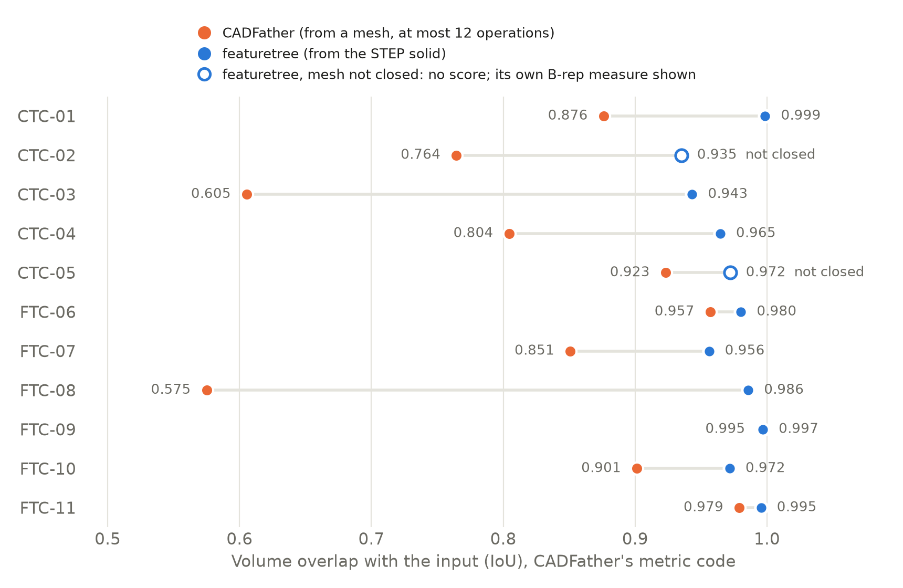
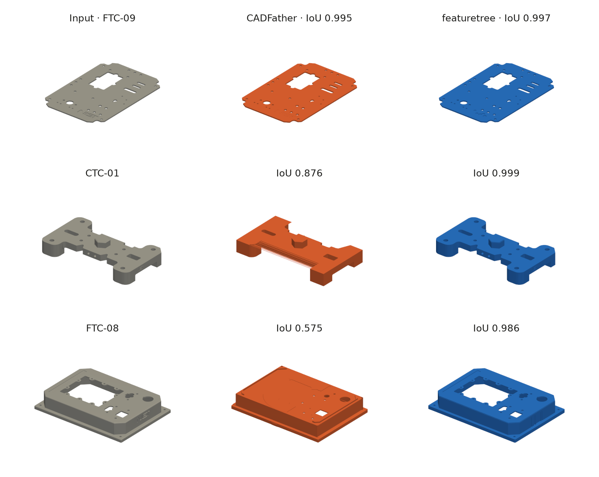

CADFather is a new open-source agent that reconstructs a CAD program from a 3D mesh. A language model looks at renders of the target and of its best attempts so far, and each turn picks a tool: a learned generator that proposes the next operation, an algorithmic fitter, or a numerical optimiser for the parameters. The output is CadQuery code. The paper evaluates it on DeepCAD, Fusion360 and other benchmark sets.
We ran it on the eleven NIST test parts we have been using for featuretree, and then scored both tools' outputs with the same code. These parts are not in CADFather's paper, and they are more complex than most of what it was evaluated on.
The two tools are not doing the same job
CADFather starts from a mesh and writes at most twelve operations. featuretree starts from the STEP solid, with its exact faces and edges, and writes as many features as it needs. Starting from a mesh is the harder problem. So this is not a ranking. It is a look at what each approach returns on the same eleven parts.
Results

| Part | CADFather: operations | IoU | GMS | Score | featuretree: features | IoU | GMS | Score |
|---|---|---|---|---|---|---|---|---|
| CTC-01 | 7 | 0.876 | 0.660 | 0.768 | 54 | 0.999 | 0.958 | 0.978 |
| CTC-02 | 11 | 0.764 | 0.721 | 0.743 | 144 | mesh not closed | ||
| CTC-03 | 7 | 0.605 | 0.902 | 0.754 | 64 | 0.943 | 0.914 | 0.929 |
| CTC-04 | 9 | 0.804 | 0.663 | 0.734 | 108 | 0.965 | 0.784 | 0.874 |
| CTC-05 | 9 | 0.923 | 0.854 | 0.889 | 57 | mesh not closed | ||
| FTC-06 | 12 | 0.957 | 0.852 | 0.904 | 31 | 0.980 | 0.774 | 0.877 |
| FTC-07 | 10 | 0.851 | 0.898 | 0.874 | 29 | 0.956 | 0.909 | 0.933 |
| FTC-08 | 11 | 0.575 | 0.703 | 0.639 | 37 | 0.986 | 0.894 | 0.940 |
| FTC-09 | 5 | 0.995 | 0.928 | 0.962 | 80 | 0.997 | 0.936 | 0.966 |
| FTC-10 | 12 | 0.901 | 0.805 | 0.853 | 38 | 0.972 | 0.828 | 0.900 |
| FTC-11 | 2 | 0.979 | 0.714 | 0.847 | 2 | 0.995 | 0.899 | 0.947 |
| Mean | 0.839 | 0.791 | 0.815 | 0.977 (9 parts) | 0.877 | 0.759 (failures as 0) | ||
Every number in the table comes from CADFather's metric code. IoU is the volume the two shapes share divided by the volume either occupies. GMS is its measure of how well the surfaces match. The score is the mean of the two, and an output whose mesh is not closed counts as a failure and scores zero.
- CADFather returned a valid closed solid for all eleven parts. Its mean IoU is 0.839, from 0.575 to 0.995.
- featuretree is higher on IoU on each of the nine parts where it gets a score, and averages 0.977 there.
- Two of featuretree's rebuilt solids, CTC-02 and CTC-05, do not turn into closed meshes, so under these rules they fail. With failures counted as zero, as CADFather's score does, CADFather is ahead overall: 0.815 against 0.759. Over the nine scored parts featuretree's mean score is 0.927.
- CADFather uses 2 to 12 operations per part. featuretree uses 2 to 144 features. A tree of 144 features is accurate, but it is a lot to edit.

The picture shows CADFather's best, median and worst part by its own IoU. On the flat plate both tools are near exact. On FTC-08 its twelve operations go to the outer shape and the large pocket in the middle is left filled.
What we found wrong with our own output
Scoring featuretree by someone else's rules turned up three defects that our own checks do not report.
- CTC-02 and CTC-05 rebuild as solids with the right volume, and the CAD kernel calls them valid, but meshing them leaves open edges at every tolerance we tried. A file like that will not print or simulate without repair. Our own measure, which samples points against the solid and never meshes it, gave these two 0.935 and 0.972.
- The CTC-04 solid contains 30 small enclosed voids that are not in the original. The metric code treats them as filled, which is why it reads 0.965 where our measure reads 0.990.
- CTC-03 comes back as five separate solids where the original is one.
How it was run
CADFather ran from its public repository with its own configuration: the same models, tools, budgets, limits and seed. The paper used four H100 GPUs. We rented one, so both models shared it and there was one copy of the assistant model where the paper has three. No part came near the time limit. The slowest took 504 seconds of an allowed 1,000, so we do not think the smaller machine changed the results. The eleven parts ran in parallel in about eight and a half minutes, after about eight minutes of loading models. The GPU time for the run and the failed attempts before it cost about three dollars.
The meshes CADFather was given were made from the NIST STEP files at a tolerance of a thousandth of each part's size. featuretree's trees are the ones from our September run, rebuilt today, moved back into the original part's position and meshed the same way. They were not recognised again for this post.
What this does not show
- It is eleven parts and one run of each tool. CADFather was run once with one seed.
- We have not run featuretree on DeepCAD or Fusion360, where CADFather's published results are. An earlier attempt of ours was invalid because of a library version problem, and we have not repeated it.
- featuretree had the exact solid as input. Given only a mesh it would not run at all. Our mesh-input tool handles round stepped parts only.
- Overlap says nothing about whether a tree is pleasant to edit. Neither set of trees was opened in a CAD program for this post.
- featuretree labels eight of these eleven recoveries PARTIAL by its own checks. Those labels are unchanged.
What's next
Fix the open meshes, the voids and the split solids, and add a closed-mesh test to our own checks. Run featuretree on the DeepCAD and Fusion360 test sets. Look at whether a short CADFather program is a useful starting point for the parts where our trees run long.
Who did what
We chose the comparison and asked for it to be scored one way for both. Claude set up the run and wrote the scoring. CADFather, its models and its metric code are the work of its authors.
featuretree is at punkfab/featuretree. The scoring scripts for this post are not in the repository yet. Got a STEP file that should be an editable model? Start a project →